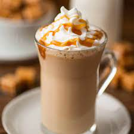

Types of Hot Coffee Drinks

Black Coffee
No frills here: Black coffee is made from plain ground coffee beans
that are brewed hot. It's served without added sugar, milk, or flavorings.

Decaf
Coffee beans naturally contain caffeine, but roasters can use several
different processes to remove almost all of it. Decaf coffee is brewed with
these decaffeinated beans.

Espresso
Most people know that a shot of espresso is stronger than the same amount of coffee,
but what's the difference, exactly? There isn't anything inherently different about
the beans themselves, but when beans are used to make espresso they're more finely
ground, and they're brewed with a higher grounds-to-water ratio than what's used for
coffee.

Latte
This classic drink is typically 1/3 espresso and 2/3 steamed milk, topped with a thin layer
of foam, but coffee shops have come up with seemingly endless customizations. You can experiment
with flavored syrups like vanilla and pumpkin spice or create a nondairy version by using oat milk.
Skilled baristas often swirl the foam into latte art!

Cappuccino
This espresso-based drink is similar to a latte, but the frothy top layer is thicker.
The standard ratio is equal parts espresso, steamed milk, and foam. It's often served
in a 6-ounce cup (smaller than a latte cup) and can be topped with a sprinkling of cinnamon.

Americano
Order this drink and you'll get a shot of espresso diluted with hot water.

Irish Coffee
This boozy drink is a combination of black coffee, whiskey, and sugar, topped with a dollop
of whipped cream. Ree's mom used to make Irish coffee all the time, and now Ree does, too.